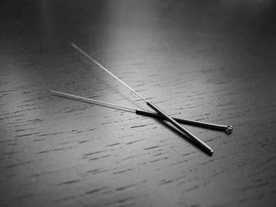

Acupuntura
O Que é Acupuntura?

A acupuntura é um método terapêutico com origem na Medicina Tradicional Chinesa, que consiste na estimulação de pontos específicos através de agulhas. Essa estimulação tem a capacidade de regular o fluxo energético que é responsável pela fisiologia do corpo humano. A palavra "acupuntura" vem do latim - acus significa agulha e punctura significa puncionar.
Efeitos da Acupuntura
As endorfinas desempenham um importante papel no funcionamento do sistema hormonal, além de ser várias vezes mais potente que a morfina, daí a indicação e eficiência da acupuntura no tratamento de dores nas costas, artrites, infertilidade, etc. Alguns dos efeitos fisiológicos observados num tratamento contínuo com acupuntura são a redução de inflamações, o alívio da dor e espasmos musculares, além do aumento do número de células de defesa.
A prática da Acupuntura dói?
É bem comum as pessoas se perguntarem se acupuntura dói, mas saiba que quando o terapeuta insere a agulha na pele, o cliente pode ter uma leve “sensação de picada” ou “sensação de choque”, mas nada que gere desconforto ou impeça a prática da técnica.
Para que serve a Acupuntura?
Segundo a OMS (Organização Mundial da Saúde), a acupuntura serve como complemento para tratamentos da medicina tradicional e inclusive, lista mais de 40 doenças em que há ótimos resultados com a utilização desta técnica, das quais podemos destacar:
- Recuperação de AVC
- Depressão
- Cólicas
- Enxaqueca
- Alergias
- Artrite
- TPM
- Auxilia no emagrecimento
- Dores nas costas
- Dores musculares